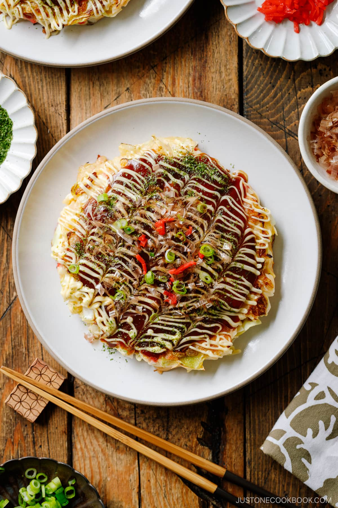

Okonomiyaki Recipe by JustOneCookBook

Okonomiyaki
Okonomiyaki (お好み焼き) is a savory Japanese cabbage pancake. I’ve seen okonomiyaki referred to as a “Japanese pizza” or “Japanese frittata” in the U.S.
Ingredients
For the base batter
- All-purpose flour
- Salt
- Sugar
- Baking powder
- Grated mountain yam
- Dashi
For the Okonomiyaki
- Eggs
- Tenkasu
- Pickled red ginger
- Green cabbage
- Sliced pork belly
Steps
- Make the base batter. It’s said that making the base batter ahead of time improves the flavor and fluffiness of the okonomiyaki. It’s up to you. You can at least rest the batter a little while you prep other ingredients.
- Prep the ingredients. Cut all the ingredients. Make sure to drain the cabbage well so the moisture won’t dilute the batter. The salad spinner comes in handy!
- Make the okonomiyaki batter. Add eggs, tempura scraps, chopped red pickled ginger, then finely chopped cabbage. Mix them all together.
- Cook the okonomiyaki batter in frying pans or an electric griddle. I said pans (plural) so that you can cook two savory pancakes at a time.
- Add condiments and toppings. Enjoy!